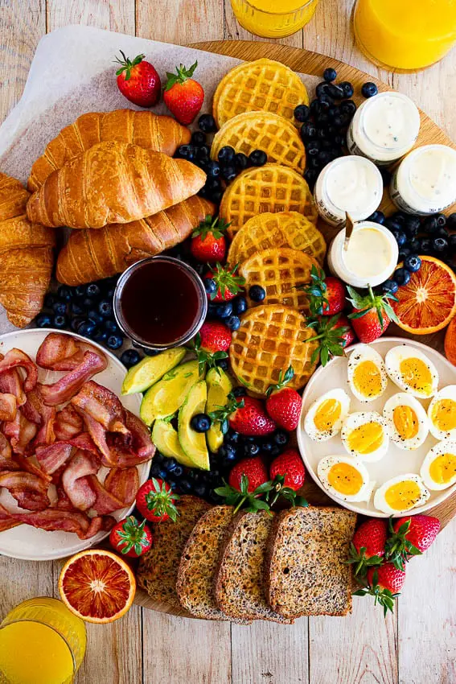

Where Did Brunch Come From?
Andrena Yacoub – November 13, 2025 – Food Fun Facts
Brunch, the beloved weekend tradition that combines breakfast and lunch into one deliciously lazy meal — actually has a surprisingly interesting history. Long before it became a global social ritual filled with avocado toast, eggs Benedict, and bottomless mimosas, brunch started as a simple idea in 19th-century England. The first known mention of “brunch” appeared in an 1895 article by British writer Guy Beringer titled “Brunch: A Plea.”Beringer proposed an alternative to the heavy, formal Sunday dinners of the Victorian era. After a long Saturday night, he argued, people didn’t want to wake up early for breakfast or sit through a big midday roast. Instead, he suggested a late-morning meal that was cheerful, sociable, and relaxed — a time to gather with friends and ease into the day. His article described brunch as “merry, talk-compelling” and even suggested that it would make life “brighter for Saturday-night carousers.” The idea caught on gradually in Britain, but brunch didn’t truly explode until it crossed the Atlantic. In the 1930s, the concept made its way to North America, thanks in part to Hollywood stars who often stopped in Chicago while traveling across the country by train. Hotels began offering late-morning meals to accommodate their famous guests, who preferred to sleep in and dine at a more leisurely hour. As celebrities embraced it, the trend spread — and soon, North Americans everywhere were catching on to the joy of mixing pancakes with prosecco.
By the 1960s and 70s, brunch had become more than just a meal — it was a cultural event. It reflected changing lifestyles: more women entering the workforce, more flexible weekends, and a growing emphasis on casual socializing. Restaurants began crafting creative menus that blended sweet and savory dishes, from waffles with fried chicken to smoked salmon bagels and quiches. Brunch also became a symbol of urban life, representing a slower pace and the chance to unwind with friends after a busy week. Fast-forward to today, and brunch has evolved into a global phenomenon. Cities like New York, London, and Vancouver have elevated it into an art form. It’s no longer just about eating — it’s about atmosphere and experience. From cozy cafés to rooftop patios, brunch is all about good vibes, coffee, and community. Social media, especially Instagram and TikTok, has turned brunch into a photogenic ritual — latte art, syrup drizzles, and colorful smoothie bowls filling feeds every weekend. And while the foods have changed — think vegan scrambles, matcha lattes, and ube pancakes — the heart of brunch remains the same as Beringer imagined it: a joyful, unhurried moment that brings people together. Whether you’re in London, Los Angeles, or Vancouver, brunch is more than just a meal — it’s a tradition that celebrates connection, comfort, and creativity on a lazy morning that never feels rushed.